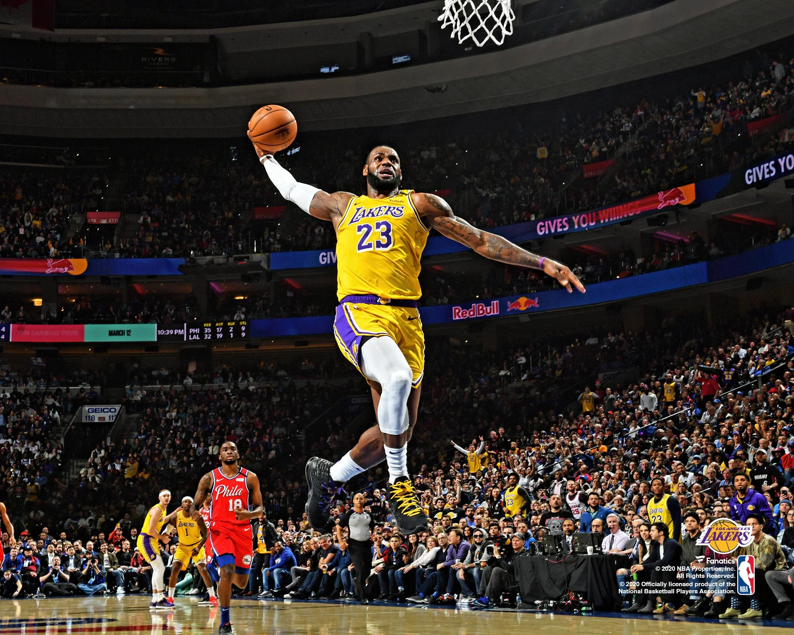
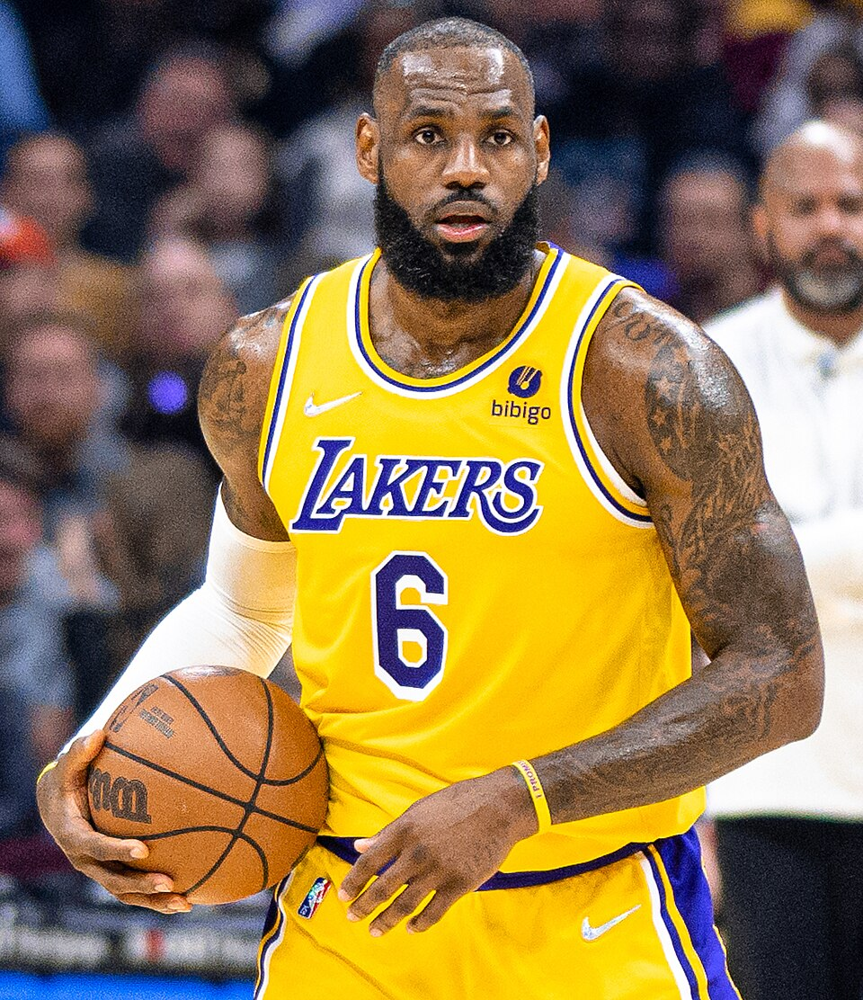
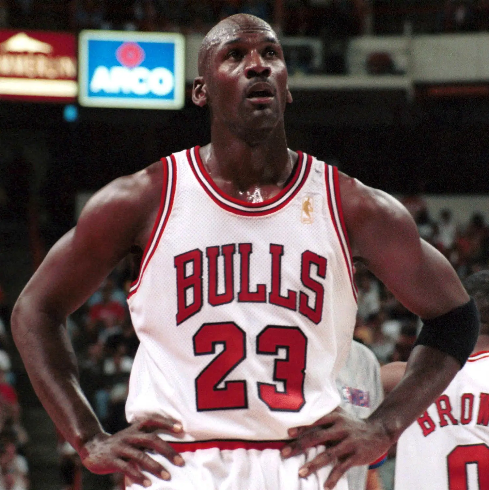
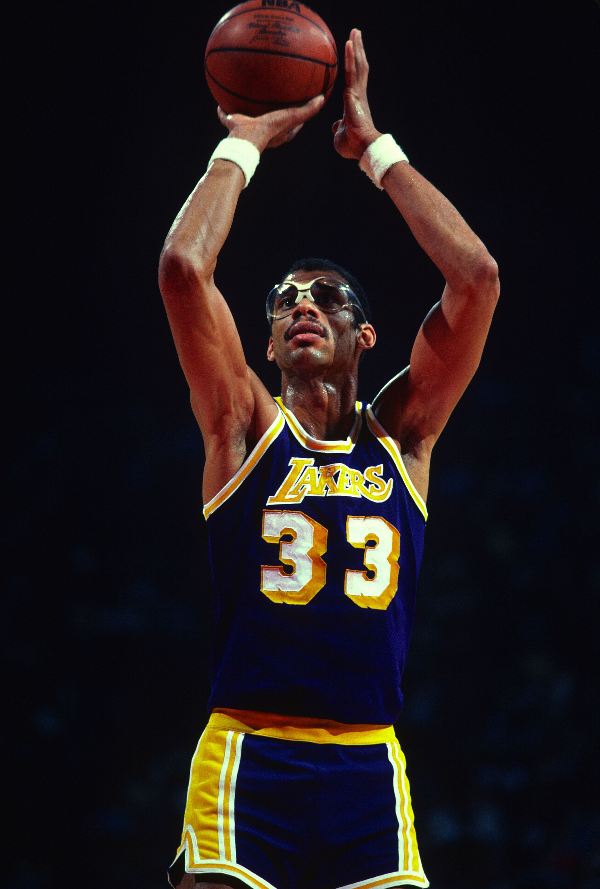

Introdução
O basquetebol, também conhecido como basquete, é um esporte coletivo amplamente praticado no mundo todo. Ele é disputado por duas equipes compostas por cinco jogadores cada, com o principal objetivo de marcar pontos ao lançar a bola dentro da cesta do time adversário — um aro com uma rede, fixado a 3,05 metros de altura em cada extremidade da quadra. O jogo é caracterizado por sua dinamicidade, exigindo dos atletas uma combinação de diversas capacidades físicas, como agilidade, velocidade, resistência, força muscular, além de uma excelente coordenação motora e controle corporal. Durante uma partida, os jogadores se movimentam constantemente, realizando dribles, passes, arremessos e bloqueios, o que torna o basquete uma modalidade bastante intensa e estratégica.
As partidas são divididas em quatro períodos (ou quartos), normalmente de 10 ou 12 minutos cada, dependendo da liga ou competição. O time que soma mais pontos ao final do jogo é o vencedor. Além do aspecto físico, o basquete também desenvolve habilidades cognitivas, como o raciocínio rápido, a tomada de decisões sob pressão e o trabalho em equipe. É um esporte que promove a socialização, a disciplina e o espírito esportivo. Criado em 1891 por James Naismith, no Canadá, o basquete se popularizou rapidamente e hoje é um dos esportes mais praticados do planeta, sendo destaque em grandes eventos internacionais como os Jogos Olímpicos e a NBA (National Basketball Association), a principal liga profissional dos Estados Unidos.
História
O basquete foi criado em 1891 por James Naismith, um professor de educação física canadense que lecionava nos Estados Unidos, no Springfield College, em Massachusetts. Na época, Naismith recebeu a tarefa de desenvolver uma atividade esportiva que pudesse ser praticada em ambientes fechados durante o rigoroso inverno norte-americano e que fosse menos violenta do que os esportes tradicionais da época, como o futebol americano. Para isso, ele criou um jogo simples com 13 regras básicas e usou duas cestas de pêssegos pregadas nas paredes opostas do ginásio, a uma altura de 3,05 metros — medida que permanece até hoje. A bola era similar à de futebol, e o objetivo do jogo era arremessar a bola dentro da cesta adversária. Cada vez que isso acontecia, um jogador tinha que subir numa escada para retirar a bola, já que as cestas não eram vazadas.
Com o passar dos anos, o basquete evoluiu rapidamente, ganhando popularidade dentro e fora dos Estados Unidos. As regras foram sendo ajustadas, as cestas passaram a ser abertas na parte inferior, facilitando a continuidade do jogo, e a bola foi redesenhada especificamente para a modalidade. Em 1936, o esporte estreou nos Jogos Olímpicos de Berlim, consolidando-se como uma das principais modalidades do cenário esportivo mundial. Hoje, o basquete é praticado em todos os continentes, com ligas profissionais, torneios internacionais e milhões de fãs apaixonados. A visão inovadora de James Naismith transformou-se em um legado global que promove não só a competição, mas também valores como trabalho em equipe, disciplina e inclusão.
Melhores All-Time Players
Ao longo da história do basquete, diversos jogadores se destacaram de forma tão marcante que entraram para o seleto grupo dos "all-time players", ou seja, os maiores de todos os tempos. Esses atletas não apenas dominaram as quadras com habilidades técnicas excepcionais, mas também influenciaram gerações e ajudaram a moldar o esporte como o conhecemos hoje. Nomes como Michael Jordan, considerado por muitos o maior jogador de todos os tempos, Magic Johnson, Larry Bird, Kareem Abdul-Jabbar, Kobe Bryant, LeBron James e Tim Duncan são apenas alguns dos ícones que marcaram eras diferentes com seus estilos únicos e conquistas impressionantes. Cada um deles contribuiu de maneira singular para a evolução do jogo, estabelecendo recordes, vencendo títulos e deixando um legado que transcende estatísticas — inspirando jovens atletas em todo o mundo a sonhar grande e alcançar a excelência.
LeBron James
50.033pts
Michael Jordan
32.292pts
Kareem Abdul-Jabbar
38.387pts